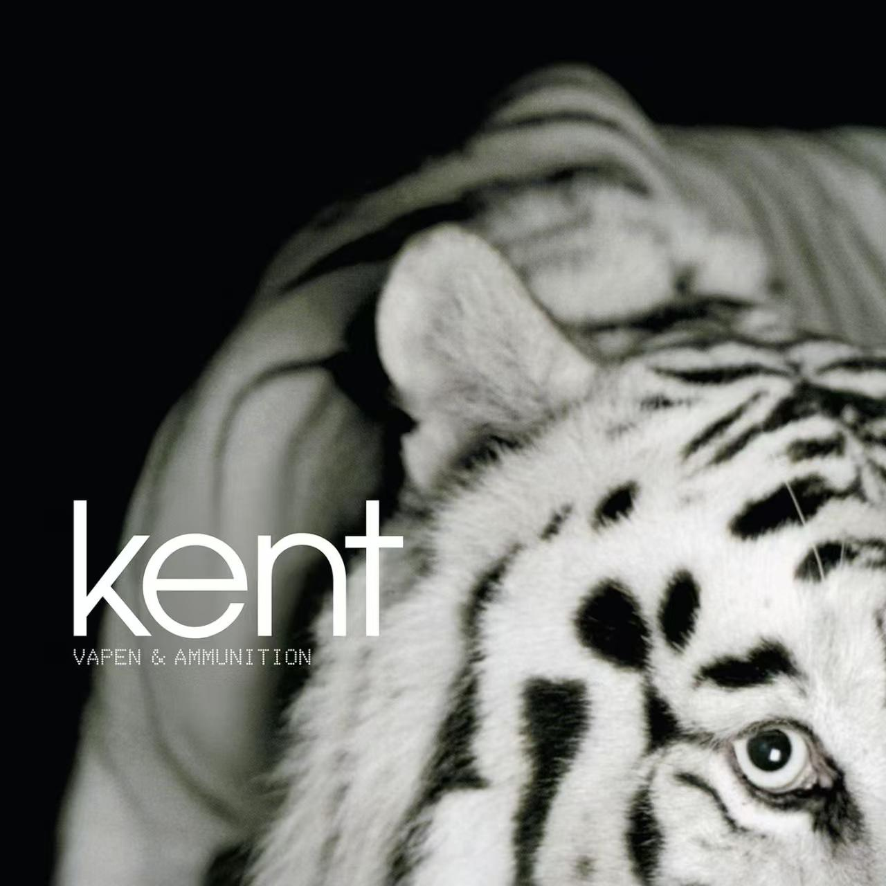
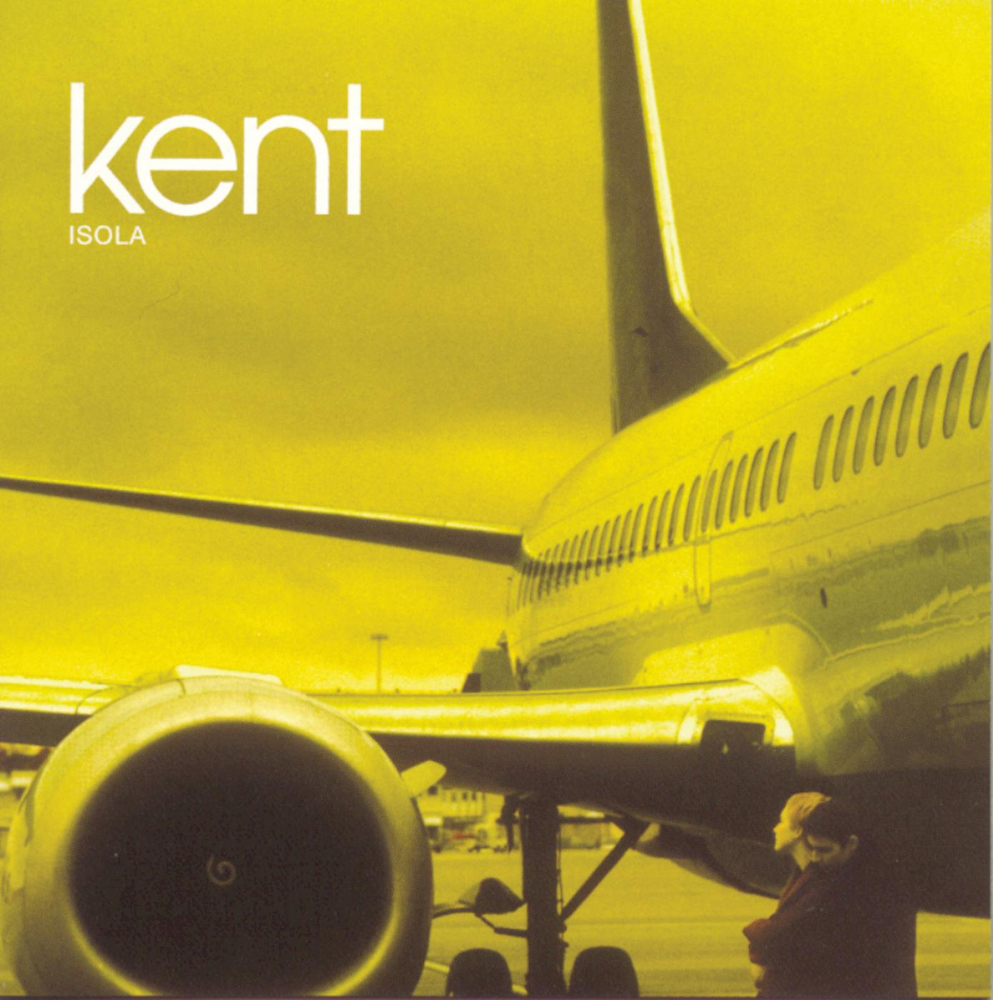

乐队专辑

Verkligen

Vapen & ammunition

Isola

Hagnesta Hill

Då som nu för alltid
专辑简介（点击专辑即可获取详情）
《Verkligen》 (1996)
这是乐队的突破之作。专辑一改首张专辑的车库摇滚风格，转向内省、忧郁的英式摇滚，常被乐评认为带有电台司令（Radiohead）早期的色彩，从而确立了肯特标志性的声音。
《Isola》 (1997)
延续了前作的风格并大获成功，发行后立即登上瑞典专辑排行榜首位。其国际版是乐队国际化战略的关键一步。
《Vapen & Ammunition》 (2002)
标志着乐队回归瑞典语创作后的巅峰。该专辑仅在斯堪的纳维亚地区就售出50万张，被认为是乐队商业成就的最高点。
《Hagnesta Hill》
是瑞典另类摇滚乐队Kent的第四张录音室专辑，于1999年发行瑞典语版本，2000年发行英文版本。英文版特别收录了两首新歌《Quiet Heart》和《Just Like Money》，而《Ett tidsfördriv att dö för》和《Insekter》两首歌曲则未被收录。其中，《Ett tidsfördriv att dö för》后来作为隐藏曲目，以“A Timekill to Die For”之名收录于专辑的digipak版本中。这也是Kent录制的第二张、也是最后一张英文专辑。
《Då som nu för alltid》
2016年3月14日，Kent宣布专辑《Då som nu för alltid》将由RCA唱片与索尼音乐发行。这是自2010年的《En plats i solen》以来，乐队再次通过索尼音乐发布作品。同日，歌曲《Egoist》作为专辑首支单曲面世。然而，在4月17日公布的正式曲目列表中，《Egoist》并未包含在内。取而代之的是，专辑首支单曲最终定为于5月3日发布的《Vi är inte längre där》。《瑞典日报》的乐评人萨拉-玛尔塔·赫格隆德对此评论道：“我听到的是四位深具自省精神的传奇人物，他们告别了青春，并有勇气在巅峰时期毅然止步。”